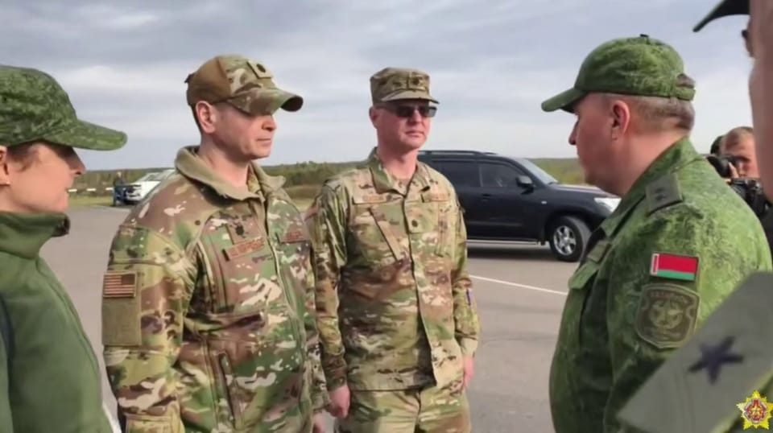

世界苦茶09月16日新闻 | 44条 | 特朗普称中美就TikTok达成一致

特朗普称中美就TikTok达成一致 | 特习周五通话 | 中国8月经济数据继续低迷 | 柯文哲交保裁定维持 | Kirk与Musk点燃英国保守派政治
苦茶数据
美元兑人民币：7.11（昨日7.12，前日7.12）
美元兑日元：146.98（昨日147.67，前日147.36）
上证指数：3857（昨日3870，前日3870）
标普500指数：6615（昨日6584，前日6587）
比特币：115747（昨日115503，前日115941）
布伦特原油：67.59（昨日66.99，前日65.95）
中国新闻
• 特习周五通话在即 ：美国总统特朗普星期一说，美中贸易谈判进展顺利，并透露他将在星期五与中国国家主席习近平通话。特朗普星期一在社交媒体Truth Social上发文说：“美国与中国在欧洲举行的大型贸易会议进展非常顺利，即将结束。”特朗普还暗示美中就TikTok问题的达成协议。他在文中说：“我们也就一家‘特定’公司达成协议，这家公司是我国年轻人非常想要保住的。他们会非常高兴！我将在星期五与习近平通话，双边关系依然十分稳固！！！”
• 巴总统参访成飞歼10 ：巴基斯坦的歼-10CE今年早些时候击落印度使用的西方战机后，巴基斯坦总统办公室称，巴国总统扎尔达里成为首位访问中国航空工业集团成飞的外国元首，还登上歼-10战机竖起大拇指合影。据巴通社消息，应中国政府邀请，扎尔达里于上周五启程访华10天，到访成都、上海和新疆等中国多地，并与当地领导举行会谈。此次会谈将涵盖巴基斯坦与中国的双边关系，尤其侧重经贸合作、中巴经济走廊以及未来的互联互通倡议。巴基斯坦总统办公室官方X账号星期天发文称，扎尔达里成为首位访问成飞的外国元首。他高度评价歼-10和枭龙战机在增强巴基斯坦空军实力方面发挥的作用，并称赞中航工业集团是中国科技进步和中巴战略伙伴关系的象征。
• 东部战区发布攻台军歌MV ：中国大陆解放军东部战区发布《把胜利的旗帜插在宝岛上》MV，视频画面包括两栖登陆、夺岛演习和台北101等台湾地标，以及“拥抱澎湖湾，驻泊基隆港”、“击水日月潭，俯瞰阿里山”的歌词。解放军东部战区陆军微信公众号“人民前线”上周六发文，介绍军营原创曲目《把胜利的旗帜插在宝岛上》，并写道：”将强军信念融入铿锵旋律，用歌声培塑血性胆魄，用誓言激昂精武强能，用号角凝聚攻坚力量。”文中也同时配上3分33秒的歌曲MV。综合《星岛日报》和ETToday新闻云报道，引起外界注意的是，这首军歌歌词以“统一的先锋”、“正义的力量”定义军队角色，内容则直指台湾地标：“拥抱澎湖湾，驻泊基隆港”、“击水日月潭，俯瞰阿里山”。
• 中泰再办空军联训 ：中国国防部公布，中国和泰国9月将再度举行空军联合训练，中国会派出多型飞机及地面防空力量等赴泰国参训。据中国国防部官网消息，中泰“鹰击-2025”空军联合训练9月中下旬将在泰国举行，中方派出多型飞机及地面防空力量等参训。中国国防部称，此次联训有利于提高参训部队技战术水平、深化两军互信与务实合作。
• 西贝为预制菜风波致歉 ：中国连锁餐厅西贝与知名科技创业者罗永浩的预制菜争论持续数日后，公司发布道歉信称，生产工艺与顾客的期望有较大差异，多款菜品将调整为门店现做。西贝星期一下午在官方微博发布致歉信称，公司近日受到广泛关注与讨论，“在这场风波中，我们看到了许多顾客对西贝的关心、疑问与批评这些声音，我们都记在心里”。致歉信称深刻意识到西贝的生产工艺与顾客的期望有较大差异，没有满足广大顾客的需求与期待，对给顾客带来的困扰和担忧致以深深歉意，向每一位关注此事提出意见建议的顾客，致以最诚挚感谢。
亚太印太新闻
• 东帝汶抗议购置公车 ：东帝汶批准为国会议员购置公务车的计划引发不满，星期一有1000多人在位于首都帝力的国会大楼附近举行抗议活动，其间有示威者向国会大楼丢石块，警方发射催泪弹驱散民众。示威者大部分是大学生，他们是在抗议当局去年批准为65名议员每人购置一辆公务车的计划。东帝汶是东南亚最贫穷的国家之一。根据世界银行的数据，这个国家超过40%的人口生活在贫困线以下。
• 印尼发布振兴方案 ：印度尼西亚公布一项总额达16万2300亿印尼盾的新经济振兴计划，其中包括粮食援助，以及有望为60多万人提供临时工作的一项基础设施建设计划。路透社报道，印尼经济事务统筹部长艾尔朗加星期一告诉记者，这些振兴措施将于今年第四季度实施，部分措施会延长至2026年。印尼经济今年第二季度同比增长5.12%，创下两年来的最高增速，但一些政策制定者说，有迹象表明第三季度经济增速正在放缓。 （翻評：基建立國，印尼是徹底跟隨中國經濟發展方式了，不過如果方式得當，倒也不完全是個問題。）
• 柯文哲再裁定交保 ：台湾民众党前主席柯文哲上周交保获释后，台北地检署提抗告成功，台湾高等法院撤销柯的交保裁定，并发回台北地方法院重新裁定。台北地院星期一重开羁押庭后，再度裁定柯文哲交保，并维持原交保金额。综合台湾《联合报》和TVBS新闻网报道，柯文哲和国民党籍台北市议员应晓薇涉京华城案等被羁押禁见，台北地方法院9月5日裁定柯文哲7000万元新台币交保，应晓薇3000万元交保，均限制住居、限制出境、出海八个月。台北地方检察署9月9日以证人尚未诘问完毕，以及柯文哲交保获释后立即接触证人陈智菡与陈宥丞为由，向台湾高等法院提起抗告。高院认定检察官抗告有理由，9月12日撤销原裁定，发回台北地方法院重新裁定。
• 澳巴新签历史性防务协定 ：澳大利亚和巴布亚新几内亚星期三将签署“历史性”国防协议，巴新人日后可在澳洲军队中服役。新的国防协议将于星期三在巴新最大城市莫尔兹比港，由澳洲总理阿尔巴尼斯和巴新总理马拉佩代表签字。这是巴新脱离澳洲独立50周年庆祝活动的一部分。澳洲防长马尔斯星期一说，这项协议“具有历史意义”。
• 缅甸部分选区停选 ：缅甸军政府星期一说，全国约七分之一的选区将无法在年底举行选举，这相信是因为军方正与众多反对选举的反叛武装交战。缅甸大选将分阶段在今年12月和明年1月举行，首阶段将于12月28日开始。缅甸选举委员会在国家媒体发布的公告中称，下议院56个选区和上议院九个选区将不举行选举。
• 罗智强登记参选国民党主席 ：台湾在野的国民党主席10月改选，星期一起开始领表登记。表态参选的国民党立委罗智强在星期一上午领表，并在受访时称，国民党的青壮世代已经能承担下架总统赖清德的重责大任。综合中时新闻网、TVBS新闻网、《自由时报》等报道，罗智强星期一上午在国民党立委徐巧芯陪同下赴国民党中央党部领表。他说，这是国民党中生代掌舵、新生代领航的契机；如果自己当选主席，会邀请徐巧芯主掌社群发展、青年发展还有人工智能等领域。罗智强还说，参选党主席不是他一个人的决定，当台中市长卢秀燕决定不参选、党主席朱立伦要交棒的时候，就有新生代立委劝进他。
• 泰前总理他信转入狱医病房 ：泰国前首相达信星期一被转移到监狱中的医疗病房，泰国惩教署一名官员透露，这是因为达信年事已高且患有慢性疾病。泰国最高法院上周裁定，76岁的达信在2023年服刑期间住在医院套房而非牢房，认为他的刑期执行方式不合法，因此判处他入狱一年。不过，泰国惩教署一名匿名高官星期一告诉法新社，达信因年龄和慢性疾病被转移到狱中的医疗病房。他没有说明达信是否正在接受治疗，还是这只是预防措施。
• 澳气候风险评估警示 ：澳大利亚一份气候风险评估报告警告，到2050年，气候变化引发的海平面上升和洪水灾害，将影响150万澳洲人。法新社报道，发布于星期一的澳洲国家气候风险评估报告指出，气温上升会对澳洲产生“级联、叠加且并发”的连锁影响。澳洲气候部长鲍文表明：“我们正在亲历气候变化。这并非预测或推测，而是活生生的现实，任何影响都已无法避免。”
• 朝称核国地位不可逆 ：朝鲜常驻联合国代表团说，朝鲜核武国家地位已永久确立，不可逆转。朝鲜常驻联合国代表团星期一通过朝鲜官媒朝中社发表声明说：“近日在国际原子能机构理事会会议上，美国再次将我国拥有核武器定性为非法，并高呼无核化口号，这构成严重政治挑衅。”声明强调，朝鲜作为核武国家的地位，“已永久载入国家最高根本法，成为不可逆转的事实”。
科技新闻
• 马德里会谈TikTok框架 ：中美在西班牙马德里举行贸易会谈后，中国商务部国际贸易谈判代表兼副部长李成钢说，双方就TikTok问题进行了深入沟通，并达成以合作方式妥善解决相关问题的基本框架共识。据新华社报道，李成钢星期一说，过去两天，中美双方在西班牙马德里举行会谈。双方积极落实两国元首通话达成的重要共识，充分发挥中美经贸磋商机制作用，在相互尊重、平等协商的基础上，就TikTok等经贸关切进行了坦诚、深入且建设性的沟通。他还说，中美双方在本次会谈中以合作方式妥善解决TikTok相关问题，减少投资障碍，促进有关经贸合作等达成了基本框架共识。
• 特习将通话TikTok框架 ：美国财政部长贝森特星期一说，美国总统特朗普与中国国家主席习近平将于星期五通话，并表示两国已在贸易谈判中，就短视频平台TikTok转换到美国控制的所有权达成框架协议，将留待特朗普与习近平通话时确认。综合路透社、彭博社报道，贝森特还说，中美约一个月后，再于不同地点举行贸易谈判。至于双方能否在亚太经合组织峰会于韩国举行之前达成贸易协议，贝森特表示“有待观察”。外界评估，习近平和特朗普可能在峰会上碰面。美国贸易代表格里尔则表示，中美可能再次延长关税休战期。双方正在实施的90天关税休战期，将在11月10日到期。新华社报道，中国商务部国际贸易谈判代表兼副部长李成钢星期一也证实，中美双方围绕TikTok及中国的关切进行了“坦诚、深入交流”，就以合作方式妥善解决TikTok相关问题，减少投资障碍，促进有关经贸合作等，“达成了基本框架共识”。 （翻評：TikTok成為中美談判核心，說明特朗普的決策結構已經完全腐壞，完全考慮個人權力，而非國家利益。）
• GPT-5 Codex发布 ：OpenAI公司周一宣布，将向其人工智能编程智能体Codex发布新版本GPT-5。这家AI公司表示，新模型GPT-5-Codex以比先前模型更动态的方式分配其 “思考” 时间，可在编程任务上花费几秒钟到七小时不等。因此，它在智能体编码基准测试中表现更优。新模型现在正通过Codex产品 —— 可通过终端、IDE、GitHub或ChatGPT访问 —— 向所有ChatGPT Plus、Pro、Business、Edu和Enterprise用户推出。OpenAI表示计划未来向API客户提供该模型。OpenAI 表示，GPT-5-Codex 在 SWE-bench Verified 上的表现优于 GPT-5。
• Alphabet市值破3万亿 ：谷歌母公司Alphabet公司周一首次达到三万亿美元市值，得益于围绕人工智能的新一轮乐观情绪和有利的反垄断裁决。该公司 A 类股票上涨4.6%至251.88美元，而C类股票攀升4.5%至252.3美元，两者均创历史新高交易。Alphabet公司加入了包括iPhone制造商苹果公司和微软公司在内的公司行列，这些公司也都实现了三万亿美元的估值。人工智能领导者英伟达公司已经突破四万亿美元大关。投资者情绪在该公司云计算部门第二季度收入增长近32%后也得到了提振，这一表现超出预期，因其内部芯片和Gemini人工智能模型的投资开始产生回报。
• 星链短暂大规模宕机 ：美国亿万富翁马斯克的卫星互联网服务“星链”星期一短暂中断，目前大多数用户的服务已恢复。路透社引述追踪网站 Downdetector.com 称，截至美国东部时间星期一凌晨1时15分，报告问题的美国用户数量已从4万3000多人的峰值，下降至1000人以下。平台通过汇总多个来源的状态报告来追踪中断情况。星链网站在星期一早些时候报告了一次中断，但没有提供详细信息，只说：“星链服务目前中断。我们的团队正在调查。”
• 中国对英伟达再立案调查 ：中美在西班牙马德里举行贸易谈判之际，中国官方星期一称英伟达违反反垄断法，决定对这家美国晶片巨头实施进一步调查。中国国家市场监管总局星期一下午在官网发布消息称，近日，经初步调查，英伟达违反《中华人民共和国反垄断法》和《市场监管总局关于附加限制性条件批准英伟达公司收购迈络思科技有限公司股权案反垄断审查决定的公告》，市场监管总局依法决定对英伟达实施进一步调查。这意味着英伟达在去年12月被查之后，相关调查再有新动向。
• AWS否认大中华裁员 ：亚马逊云科技否认有关将在大中华区裁员的消息，并称持续在中国积极招聘人才。微信公众号“雷峰网”星期一上午发文称，近期业内盛传亚马逊云科技大中华区正在酝酿一次裁员，预计将发生在9月底至10月之间。裁员比例说法不一，可能在20%至30%之间。雷峰网也提到，目前亚马逊云科技大中华区人员规模不到1700人，若按照这个裁员比例，裁员人数约在300至500人左右。
财经新闻
• 中国8月工业消费低于预期 ：中国官方数据显示，中国8月规上工业增加值和消费零售总额增长低于市场预期。中国国家统计局星期一在官网发布的最新数据显示，中国8月规模以上工业增加值同比增长5.2%，低于上月同比增长5.7%，也不及路透社预测的5.7%。从环比看，中国8月规模以上工业增加值比上月增长0.37%。中国1至8月规模以上工业增加值同比增长6.2%。
• 马斯克豪掷10亿美元自购特斯拉股票： 马斯克罕见在公开市场买入股票后，特斯拉股价明显走高。当地时间周一发布在特斯拉官网的“FORM 4”文件显示，CEO马斯克于上周五买入了 257万股特斯拉股票，总共斥资约10亿美元。文件显示，马斯克的买入价格在每股371.9美元至396.359美元之间。周一早盘截至发稿，特斯拉股价报 420美元，涨幅超过6%，年内表现由跌转涨。作为特斯拉最重磅的 “内部人员”，马斯克此次购股被视为对这家电动汽车公司投下的 “信任票”。按金额计算，本次是他史上最大的一笔买入。
• 放松跨境投融资 ：中国放松跨境投融资规定，以吸引外资并支持房地产市场。据中新社报道，中国国家外汇管理局星期一发布消息称，日前发布的《国家外汇管理局关于深化跨境投融资外汇管理改革有关事宜的通知》提出，缩减资本项目收入使用负面清单，取消不得用于购买非自用住宅性质房产限制。《通知》优化资本项目收入支付便利化政策，具体包括优化资本项目外汇收入支付，允许银行在统筹便利化服务和风险防范前提下，依据客户合规经营情况和风险等级等自行决定便利化业务事后随机抽查的比例和频率。
• 腾讯拟发离岸人民币债 ：知情人士透露，中国科技巨企腾讯最快星期二发债，为四年来首次。彭博社星期一引述知情人士报道，腾讯已委任多家银行安排公司四年来首次债券发行计划。知情人士称，腾讯计划最早于星期二发行以离岸元人民币计价的票据，期限分五年期、10年期和30年期。
• 美全球关税冲击 ：美国特朗普的全球关税实施了一个月，已对美国进口商造成实质冲击。巴塞罗那货运平台Freightos对336家中小企业的调查显示，近半数受访者说，他们的成本上升20%以上，约有同样比率的企业因成本上涨而减少出货量。企业此前为“囤货还是观望”而焦虑，如今支付关税的痛苦正取代不确定性，成为更大负担。
• 特朗普施压美联储降息 ：美国联邦储备局召开关键政策会议前夕，美国总统特朗普再度施压美联储大幅降息。特朗普星期一在社媒平台Truth Social上发文说，美联储主席鲍威尔“必须立即降息，而且要大于他预想的幅度”。他还称鲍威尔“太迟”降息。
• 美财长谈再启中美谈判 ：美国财长贝森特说，未来几周可能会有新一轮中美谈判，而他认为中国宣布对英伟达的调查时机不佳。路透社报道，中美代表团星期天在西班牙马德里举行贸易谈判，星期一继续会谈。代表美国参与会谈的贝森特星期一说，美国愿意考虑对俄罗斯实施更严厉的制裁，包括对石油巨头实施制裁，以及更大范围使用被冻结的俄罗斯资产。
• 特朗普倡半年报制 ：美国总统特朗普说，公司企业不应被迫按季度提交财务报告，他更倾向于六个月一次的财报周期，认为这能节省企业的时间和成本。彭博社报道，特朗普星期一在社交媒体上发文称：“如果获得美国证券交易委员会批准，公司和企业不应再被迫按季度提交财报，而应按‘六个月一次’提交财报。这将节省资金，并让管理者能够专注于妥善运营公司。”特朗普将美国的财报流程与中国进行了比较，暗示北京已经建立了一套对中国企业更高效、更具成本效益的体系。
• 小鹏欧洲本地化量产 ：中国电动车企小鹏汽车公告，在欧洲的首个本地化生产项目在奥地利启动。小鹏汽车星期一在官方微信公众号上公告，公司首个欧洲本地化生产项目于2025年第三季度，在奥地利格拉茨麦格纳工厂正式启动，首批小鹏G6与小鹏G9顺利量产下线。小鹏汽车自2021年以挪威为起点进入欧洲市场以来，全球化版图持续扩张，目前已覆盖全球超46个国家和地区。今年1至7月，小鹏汽车海外销量达1万8701辆，同比激增217%。
• 中汽协倡不超60天账期 ：中国汽车工业协会倡议，中国整车企业对供应商企业的支付账期最长不超过60天。中汽协星期一在微信公众号上，发布《汽车整车企业供应商账款支付规范倡议》（简称《倡议》），围绕订单确认、交付与验收、支付与结算、合同期限等关键环节，对整车企业与供应商企业采购合同中账款支付相关内容作出规范倡议。《倡议》明确，甲（整车企业）乙（供应商企业）双方通过采购订单确认订货日期等事项；乙方应按采购订单、交货通知单约定向甲方交货；甲方应在接收货物后及时完成验收，验收合格即出具验收单等。
俄乌战争
• 俄以物易物避制裁 ：自2014年俄罗斯并吞克里米亚和2022年俄乌战事爆发以来，美欧及其盟友对俄罗斯实施了2万5000多项制裁。为了规避西方制裁，俄罗斯对外贸易中重新兴起自1990年代以来未见的物物交换现象。路透社根据贸易消息人士提供的信息、海关报告和企业文件，确认了八笔物物交换的交易，包括以俄罗斯小麦换取中国汽车、用亚麻籽换取中国建筑材料和家电、用金属换中国机械、用原材料换中国的服务。知情者透露，根据俄罗斯乌拉尔地区2004年的一份海关报告，其中一笔用亚麻籽换取中国商品的交易，估计价值约10万美元。
• 克宫称北约对俄对抗 ：俄罗斯克里姆林宫星期一说，北约向乌克兰提供直接和间接支持，明显是在与俄罗斯对抗。克宫发言人佩斯科夫对记者说，北约这么做，实际上参与了这场战争。佩斯科夫说：“北约正在向基辅政权提供直接和间接支持。可以肯定地说，北约正在与俄罗斯对抗。”
• 特朗普终于称俄罗斯为乌克兰战争的“侵略者”： 美国总统唐纳德·特朗普终于在乌克兰战争中将俄罗斯称为侵略者，进一步表明他对莫斯科态度的强硬转变。特朗普在周日谈及乌俄伤亡时表示：“本周有8,000名士兵阵亡，来自两国。俄罗斯稍多一些，但作为侵略者，你会损失更多。”此前，特朗普拒绝谴责莫斯科的入侵。今年2月，他的政府与俄罗斯、朝鲜一道否决了联合国一项支持乌克兰领土完整并谴责俄罗斯的提案。美国还反对七国集团在2月发表的将俄罗斯称为侵略者的声明。特朗普曾将战争归咎于乌克兰，他在4月说：“你不能对比自己大20倍的国家挑起战争，还指望别人给你送导弹。”
• 美军意外参加白俄罗斯“西方-2025”军演： 白俄罗斯国防部长赫列宁告诉到访的美军军官，他们可以“随意参观任何感兴趣的地方”。赫列宁称，美国军官的出现是“一个意外”。白俄罗斯国防部表示：“谁能想到‘西方-2025’演习的又一天早晨会这样开始？”声明指出，美国军官与包括土耳其、匈牙利在内的23个国家代表共同出席。国防部发布的视频显示，两名美军军官身着军装感谢赫列宁的邀请并与其握手。赫列宁对他们说：“我们会展示你们感兴趣的任何东西。你们想去哪里都可以，看一看，和人聊一聊。”美军军官拒绝接受媒体采访。美方的出席标志着华盛顿与白俄罗斯关系回暖的最新迹象，而白俄罗斯是俄罗斯的亲密盟友，曾允许莫斯科在2022年2月通过其领土向乌克兰派遣数万军队。
国际新闻
• 内塔尼亚胡不排除再打击 ：以色列总理内坦亚胡星期一说，无论哈马斯领导人身在何处，他不排除对他们实施进一步打击的可能性。内坦亚胡在与到访耶路撒冷的美国国务卿鲁比奥召开联合记者会时，发表上述讲话。以色列上周对身在卡塔尔的哈马斯政治领导人发动了袭击，引发国际谴责。
• 联国专家批以袭加沙 ：联合国巴勒斯坦人权事务特别报告员阿尔巴内塞警告，以色列在进攻加沙城时，不仅企图让这座城市变得“无法居住”，还将以色列人质的生命置于险境。路透社报道，阿尔巴内塞在日内瓦对记者说：“以色列正在使用非常规武器轰炸……它试图强行驱逐巴勒斯坦人。为什么？因为这是在加沙推进种族清洗之前，最后一块须要被摧毁、变得无法居住的土地。”以色列常驻联合国代表团驳斥了她的言论。代表团在声明中批评说，按照她的逻辑，哈马斯既不利用平民基础设施，也不以平民为人盾，甚至根本不存在。
• 特朗普再访英签科技核能 ：美国总统特朗普本周将对英国进行第二次国事访问，两国将宣布就科技和民用核能达成协议，英国也希望最终敲定钢铁关税。路透社报道，特朗普和妻子梅拉尼娅将于星期二抵达英国，并于星期三到伦敦西部的温莎城堡会见英国国王查尔斯三世，其间将受到英国皇室的隆重礼遇，包括马车游行、国宴、军机飞行表演和鸣炮致敬。这是继7月底在苏格兰的高尔夫球场度过一段时间后，特朗普在两个月内第二次访问英国。
• 英保守党议员投靠改革党 ：英国保守党议员克鲁格星期一宣布退党跳槽，成为自去年大选以来，首位转投英国改革党阵营的现任议员。克鲁格当天在与改革党党魁法拉奇召开的联合记者会上说，这是一个痛苦的决定，但他得出的“悲惨结论是，保守党已经完了，无论是作为一个全国性政党，或是主要的反对党”。克鲁格曾是前首相约翰逊和卡梅伦的助手，并在保守党沦为主要反对党后，担任影子内阁的福利事务发言人。
• 斯塔默斥马斯克言论 ：英国首相斯塔默严厉谴责美国亿万富翁马斯克，指他在英国规模最大的极右翼抗议活动中发表“危险且煽动性的言论”。法新社报道，斯塔默发言人星期一说：“英国是一个公平、宽容、正派的国家，英国人民最不希望看到的就是危险且煽动性的语言，这些语言威胁在我们的街头制造暴力和恐吓。”上星期六，约11万至15万人涌上伦敦街头，参加由反移民活动人士罗宾逊发起的“团结王国”游行。
• 多国多哈峰会谴以效果有限 ：卡塔尔9月15日举行阿拉伯－伊斯兰紧急峰会。卡塔尔埃米尔塔米姆、沙特阿拉伯王储穆罕默德·本·萨勒曼、土耳其总统埃尔多安、埃及总统塞西、叙利亚临时总统沙拉、伊朗总统佩泽希齐扬等人出席。塔米姆指责以色列在确保加沙不再适合居住，并不关心人质。他谴责以色列在加沙犯下的“种族灭绝”。埃尔多安呼吁对以色列进行经济制裁。佩泽希齐扬警告任何阿拉伯或穆斯林国家都可能被以色列袭击。分析认为，短时间内举办此次峰会虽然难得，但由于各国之间关系紧张且意见不统一，对以色列缺乏有效的施压手段，峰会难以达成有效成果。美国国务卿鲁比奥15日会见以色列官员，表达了对卡塔尔袭击的担忧，鼓励卡塔尔继续在停火方面发挥建设性作用。但鲁比奥和以色列总理内塔尼亚胡一致认为，结束加沙冲突的唯一途径是消灭哈马斯并释放所有人质，搁置临时停火并支持立即结束冲突。
• 40年来首次，巴拿马的海洋生命线消失： 2025年，巴拿马的季节性上升流因风力减弱而崩溃，这是40年来首次消失的现象。该事件对渔业和对气候敏感的海洋过程构成风险。巴拿马湾每年都会发生的上升流现象在2025年未能出现，这是有记录以来的第一次。来自史密森热带研究所的一组科学家将这种中断与信风减弱联系在一起。这一发现凸显了气候变化如何直接影响重要的海洋过程，以及依赖这些过程的沿海人口。
• 萨尔瓦多面临拉美最快的民主衰退： 根据一家政府间组织周五发布的报告，萨尔瓦多是近年来拉美和加勒比地区“民主恶化速度最快”的国家。国际民主与选举协助研究所区域主任马塞拉·里奥斯表示：“在过去十年里，萨尔瓦多的民主指标恶化速度在该地区最快。”自2022年以来，萨尔瓦多总统纳伊布·布克尔以“打击帮派”为名在紧急状态下执政。该措施允许未经法院许可逮捕，被人权组织批评。7月31日，由布克尔控制的国会批准了无限期连任，允许总统继续掌权。布克尔因其反帮派“战争”而享有高人气。
• 教宗利奥批评“马斯克式”高额企业薪酬： 教宗利奥在其首次媒体采访的节选中批评了给予高管远高于普通员工薪资的企业薪酬方案，他提及特斯拉近期为CEO埃隆·马斯克制定的1万亿美元薪酬计划。利奥来自芝加哥，他还谈到联合国、自己在秘鲁数十年的传教经历、适应教宗角色的过程，以及对乌俄三年血腥冲突和平的期望。他展现出比前任教宗方济各更为克制的风格，较少接受采访，更偏好准备好的文本。周日，天主教新闻网站 Crux 发布了采访节选。利奥在采访中说：“60年前，CEO可能拿到的是工人工资的四到六倍……现在是600倍。”这次采访是在7月底为一部即将出版的传记进行的。他还说：“昨天有消息称马斯克将成为世界上第一位万亿富豪。这意味着什么？这又是怎么回事？如果这就是如今唯一有价值的东西，那我们就麻烦大了。”利奥于5月当选，成为首位美国籍教宗，接替方济各。他批评联合国已经无法有效推动多边外交。 （翻評：美國這麼多保守派天主教徒怎麼辦？）